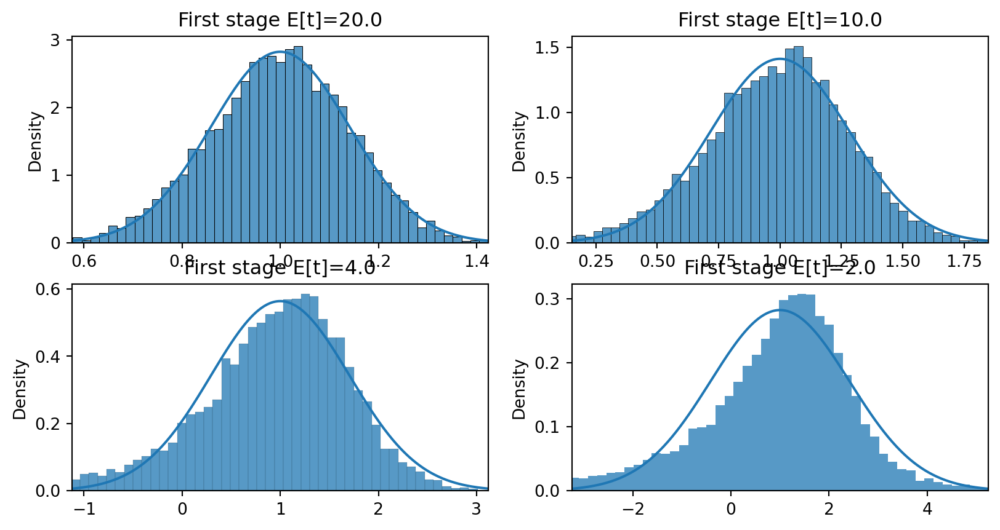
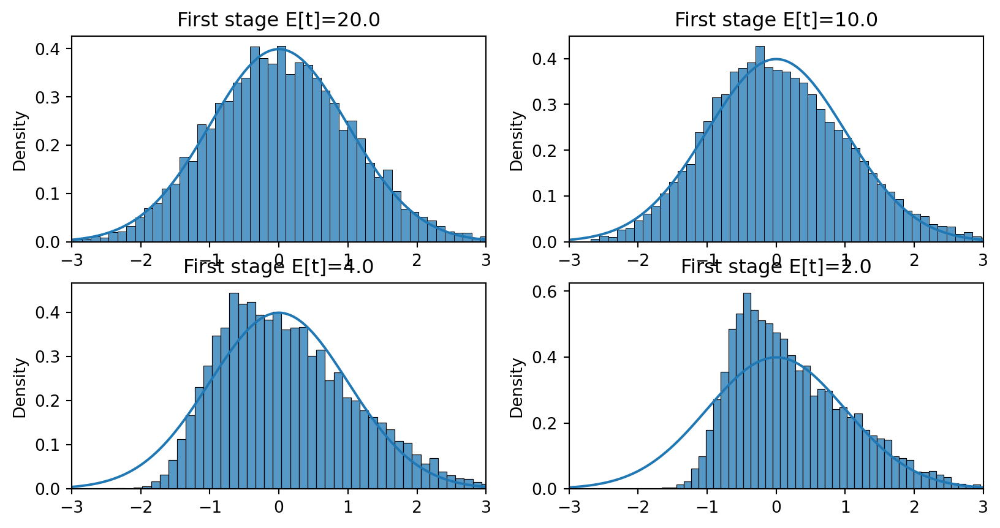

ECON526
\[ \def\indep{\perp\!\!\!\perp} % \def\idp{\perp\kern-5pt\perp} \def\Er{\mathrm{E}} \def\var{\mathrm{Var}} \def\cov{\mathrm{Cov}} \def\R{\mathbb{R}} \def\En{{\mathbb{E}_n}} \def\Pr{\mathrm{P}} \newcommand{\norm}[1]{\left\Vert {#1} \right\Vert} \newcommand{\abs}[1]{\left\vert {#1} \right\vert} \def\inprob{{\,{\buildrel p \over \rightarrow}\,}} \def\indist{\,{\buildrel d \over \rightarrow}\,} \DeclareMathOperator*{\plim}{plim} \DeclareMathOperator*{\argmax}{arg\,max} \DeclareMathOperator*{\argmin}{arg\,min} \]
\[ Y_i = X_i' \beta_0 + \epsilon_i \]
Desired model \[ Y_i = X_i'\beta_0 + W_i'\gamma_0 + \epsilon_i \] Assume \(\Er[\epsilon] = \Er[X\epsilon] = \Er[W\epsilon] = 0\)
Estimated model \[ Y_i = X_i'\beta + \underbrace{u_i}_{\equiv W_i'\gamma_0 + \epsilon_i} \]
\[ \plim \hat{\beta}^{OLS} \inprob \beta_0 + \Er[X_i X_i']^{-1} \Er[X_i W_i'] \gamma_0 \]
Equilibrium conditions lead to variables that are simultaneously determined
Demand and supply: \[ \begin{align*} Q_i^D & = P_i \beta_D + X_D'\gamma_D + u_{D,i} \\ Q_i^S & = P_i \beta_S + X_S'\gamma_S + u_{S,i} \\ Q_i^S & = Q_i^D \end{align*} \]
Assume \(X_D\) and \(X_S\) exogenous
\[ Y_i = \underbrace{X_i}_{\in \R^k}' \beta_0 + \epsilon_i \]
\(\Er[\epsilon_i] = 0\), but \(\Er[X_i \epsilon_i] \neq 0\)
Instrument \(Z_i \in \R^d\) s.t.
Relevant \(rank(\Er[Z_i X_i']) = k\)
Exogenous \(\Er[Z_i \epsilon_i] = 0\)
\[ \begin{align*} \hat{\beta}^{2SLS} & = (X'Z (Z'Z)^{-1} Z' X)^{-1} (X'Z(Z'Z)^{-1}Z'y) \\ & = (X'P_Z X)^{-1} (X' P_Z y) \\ & = ((P_Z X)'(P_Z X))^{-1} ((P_Z X)'y) \end{align*} \]
ivmodels.summary with test='lagrange multiplier'import matplotlib.pyplot as plt
group_data = (df
.groupby(["year_of_birth", "quarter_of_birth"])
[["log_wage", "years_of_schooling"]]
.mean()
.reset_index()
.assign(time_of_birth = lambda d: d["year_of_birth"] + (d["quarter_of_birth"])/4))
plt.figure(figsize=(6,6))
plt.plot(group_data["time_of_birth"], group_data["years_of_schooling"], zorder=-1)
for q in range(1, 5):
x = group_data.query(f"quarter_of_birth=={q}")["time_of_birth"]
y = group_data.query(f"quarter_of_birth=={q}")["years_of_schooling"]
plt.scatter(x, y, marker="s", s=200, c=f"C{q}")
plt.scatter(x, y, marker=f"${q}$", s=100, c=f"white")
plt.title("Years of Education by Quarter of Birth (first stage)")
plt.xlabel("Quarter of Birth")
plt.ylabel("Years of Schooling");# Convert the quarter of birth to dummy variables
factor_data = df.assign(**{f"q{int(q)}": (df["quarter_of_birth"] == q).astype(int)
for q in df["quarter_of_birth"].unique()})
# Run the first stage regression
import statsmodels.formula.api as smf
first_stage = smf.ols("years_of_schooling ~ C(year_of_birth) + C(state_of_birth) + q4", data=factor_data).fit()
print("q4 parameter estimate:, ", first_stage.params["q4"])
print("q4 p-value:, ", first_stage.pvalues["q4"])q4 parameter estimate:, 0.10085809272786722
q4 p-value:, 5.4648294166122615e-15# Plot the reduced form
plt.figure(figsize=(6,6))
plt.plot(group_data["time_of_birth"], group_data["log_wage"], zorder=-1)
for q in range(1, 5):
x = group_data.query(f"quarter_of_birth=={q}")["time_of_birth"]
y = group_data.query(f"quarter_of_birth=={q}")["log_wage"]
plt.scatter(x, y, marker="s", s=200, c=f"C{q}")
plt.scatter(x, y, marker=f"${q}$", s=100, c=f"white")
plt.title("Average Weekly Wage by Quarter of Birth (reduced form)")
plt.xlabel("Year of Birth")
plt.ylabel("Log Weekly Earnings");q4 parameter estimate:, 0.008603484260139821
q4 p-value:, 0.001494912718366322ivmodels (best support for weak instrument robust inference)pyfixest.feolsstatsmodels.sandbox.regression.gmm.IV2SLSlinearmodels.iv.IV2SLSlinearmodelsfrom linearmodels.iv import IV2SLS
formula = 'log_wage ~ 1 + C(year_of_birth) + C(state_of_birth) + [years_of_schooling ~ q4]'
iv = IV2SLS.from_formula(formula, data=factor_data).fit()
print(iv.summary) IV-2SLS Estimation Summary
==============================================================================
Dep. Variable: log_wage R-squared: 0.1217
Estimator: IV-2SLS Adj. R-squared: 0.1215
No. Observations: 329509 F-statistic: 1.028e+04
Date: Wed, Nov 20 2024 P-value (F-stat) 0.0000
Time: 12:02:10 Distribution: chi2(60)
Cov. Estimator: robust
Parameter Estimates
=============================================================================================
Parameter Std. Err. T-stat P-value Lower CI Upper CI
---------------------------------------------------------------------------------------------
Intercept 4.7468 0.2904 16.348 0.0000 4.1777 5.3158
C(year_of_birth)[T.31.0] -0.0078 0.0063 -1.2384 0.2156 -0.0201 0.0045
C(year_of_birth)[T.32.0] -0.0145 0.0073 -1.9698 0.0489 -0.0288 -7.25e-05
C(year_of_birth)[T.33.0] -0.0174 0.0086 -2.0367 0.0417 -0.0342 -0.0007
C(year_of_birth)[T.34.0] -0.0217 0.0094 -2.3012 0.0214 -0.0401 -0.0032
C(year_of_birth)[T.35.0] -0.0344 0.0108 -3.1821 0.0015 -0.0556 -0.0132
C(year_of_birth)[T.36.0] -0.0347 0.0118 -2.9309 0.0034 -0.0579 -0.0115
C(year_of_birth)[T.37.0] -0.0410 0.0132 -3.0976 0.0020 -0.0670 -0.0151
C(year_of_birth)[T.38.0] -0.0433 0.0152 -2.8520 0.0043 -0.0730 -0.0135
C(year_of_birth)[T.39.0] -0.0547 0.0161 -3.3887 0.0007 -0.0864 -0.0231
C(state_of_birth)[T.2.0] 0.2272 0.1060 2.1433 0.0321 0.0194 0.4350
C(state_of_birth)[T.4.0] 0.1215 0.0404 3.0083 0.0026 0.0424 0.2007
C(state_of_birth)[T.5.0] 0.0431 0.0123 3.5103 0.0004 0.0190 0.0671
C(state_of_birth)[T.6.0] 0.1351 0.0557 2.4268 0.0152 0.0260 0.2442
C(state_of_birth)[T.8.0] 0.0920 0.0435 2.1143 0.0345 0.0067 0.1774
C(state_of_birth)[T.9.0] 0.1051 0.0429 2.4511 0.0142 0.0211 0.1891
C(state_of_birth)[T.10.0] 0.0796 0.0280 2.8408 0.0045 0.0247 0.1346
C(state_of_birth)[T.11.0] 0.1162 0.0572 2.0317 0.0422 0.0041 0.2282
C(state_of_birth)[T.12.0] -0.0157 0.0278 -0.5651 0.5720 -0.0701 0.0387
C(state_of_birth)[T.13.0] -0.0155 0.0119 -1.3003 0.1935 -0.0389 0.0079
C(state_of_birth)[T.15.0] 0.1256 0.0575 2.1857 0.0288 0.0130 0.2382
C(state_of_birth)[T.16.0] 0.0718 0.0497 1.4450 0.1485 -0.0256 0.1693
C(state_of_birth)[T.17.0] 0.1762 0.0429 4.1080 0.0000 0.0921 0.2603
C(state_of_birth)[T.18.0] 0.1341 0.0288 4.6494 0.0000 0.0775 0.1906
C(state_of_birth)[T.19.0] 0.0735 0.0382 1.9251 0.0542 -0.0013 0.1483
C(state_of_birth)[T.20.0] 0.0420 0.0462 0.9081 0.3638 -0.0486 0.1326
C(state_of_birth)[T.21.0] 0.1194 0.0153 7.7839 0.0000 0.0893 0.1495
C(state_of_birth)[T.22.0] 0.0883 0.0150 5.8957 0.0000 0.0589 0.1176
C(state_of_birth)[T.23.0] -0.0236 0.0219 -1.0779 0.2811 -0.0666 0.0193
C(state_of_birth)[T.24.0] 0.1048 0.0225 4.6641 0.0000 0.0608 0.1489
C(state_of_birth)[T.25.0] 0.0783 0.0463 1.6916 0.0907 -0.0124 0.1691
C(state_of_birth)[T.26.0] 0.2035 0.0342 5.9550 0.0000 0.1365 0.2705
C(state_of_birth)[T.27.0] 0.1236 0.0393 3.1445 0.0017 0.0466 0.2006
C(state_of_birth)[T.28.0] -0.0170 0.0133 -1.2800 0.2005 -0.0431 0.0090
C(state_of_birth)[T.29.0] 0.0955 0.0273 3.4927 0.0005 0.0419 0.1491
C(state_of_birth)[T.30.0] 0.0479 0.0469 1.0222 0.3067 -0.0440 0.1398
C(state_of_birth)[T.31.0] 0.0610 0.0442 1.3793 0.1678 -0.0257 0.1476
C(state_of_birth)[T.32.0] 0.1220 0.0609 2.0047 0.0450 0.0027 0.2413
C(state_of_birth)[T.33.0] 0.0036 0.0294 0.1226 0.9024 -0.0540 0.0611
C(state_of_birth)[T.34.0] 0.1390 0.0453 3.0702 0.0021 0.0503 0.2277
C(state_of_birth)[T.35.0] 0.0552 0.0285 1.9373 0.0527 -0.0006 0.1110
C(state_of_birth)[T.36.0] 0.1254 0.0517 2.4242 0.0153 0.0240 0.2268
C(state_of_birth)[T.37.0] -0.0562 0.0100 -5.6174 0.0000 -0.0758 -0.0366
C(state_of_birth)[T.38.0] 0.1076 0.0360 2.9885 0.0028 0.0370 0.1781
C(state_of_birth)[T.39.0] 0.1429 0.0328 4.3559 0.0000 0.0786 0.2071
C(state_of_birth)[T.40.0] 0.0679 0.0349 1.9475 0.0515 -0.0004 0.1362
C(state_of_birth)[T.41.0] 0.1069 0.0515 2.0749 0.0380 0.0059 0.2079
C(state_of_birth)[T.42.0] 0.1103 0.0304 3.6256 0.0003 0.0507 0.1699
C(state_of_birth)[T.44.0] 0.0236 0.0352 0.6715 0.5019 -0.0454 0.0927
C(state_of_birth)[T.45.0] -0.0723 0.0163 -4.4362 0.0000 -0.1043 -0.0404
C(state_of_birth)[T.46.0] 0.0500 0.0419 1.1946 0.2323 -0.0320 0.1321
C(state_of_birth)[T.47.0] 0.0513 0.0115 4.4653 0.0000 0.0288 0.0738
C(state_of_birth)[T.48.0] 0.0708 0.0262 2.7014 0.0069 0.0194 0.1221
C(state_of_birth)[T.49.0] 0.1001 0.0590 1.6968 0.0897 -0.0155 0.2158
C(state_of_birth)[T.50.0] -0.0508 0.0276 -1.8360 0.0664 -0.1049 0.0034
C(state_of_birth)[T.51.0] 0.0362 0.0126 2.8697 0.0041 0.0115 0.0610
C(state_of_birth)[T.53.0] 0.1533 0.0511 2.9998 0.0027 0.0532 0.2535
C(state_of_birth)[T.54.0] 0.1256 0.0112 11.224 0.0000 0.1037 0.1476
C(state_of_birth)[T.55.0] 0.1051 0.0337 3.1212 0.0018 0.0391 0.1711
C(state_of_birth)[T.56.0] 0.1100 0.0548 2.0086 0.0446 0.0027 0.2174
years_of_schooling 0.0853 0.0255 3.3399 0.0008 0.0352 0.1354
=============================================================================================
Endogenous: years_of_schooling
Instruments: q4
Robust Covariance (Heteroskedastic)
Debiased: Falsepyfixestimport pyfixest as pf
ivpf = pf.feols('log_wage ~ 1 | state_of_birth + year_of_birth | years_of_schooling ~ q4', data=factor_data, vcov="HC1")
pf.etable(ivpf, type='md')index est1
------------------ ---------
depvar log_wage
-----------------------------
years_of_schooling 0.085***
(0.026)
-----------------------------
year_of_birth x
state_of_birth x
-----------------------------
Observations 329509
S.E. type hetero
R2 -
-----------------------------
ivmodelsfrom patsy import dmatrices
import ivmodels
y,X = dmatrices("log_wage ~ 0 + years_of_schooling", data=factor_data, return_type='dataframe')
Z,controls = dmatrices("q4 ~ C(year_of_birth) + C(state_of_birth)", data=factor_data, return_type='dataframe')
controls.drop("Intercept", axis=1,inplace=True)
ivm = ivmodels.KClass(1).fit(X=X,y=y,Z=Z,C=controls)
sw = ivm.summary(X=X,y=y,Z=Z,C=controls, test='wald', feature_names=["years_of_schooling"])
print(sw)Summary based on the wald test.
estimate statistic p-value conf. set
years_of_schooling 0.0853 11.15 0.0008402 [0.03523, 0.1354]
Endogenous model statistic: 11.15, p-value: 0.0008402
(Multivariate) F-statistic: 61.09, p-value: 5.44e-15First stage \(X = Z\gamma + e\), simulation with \(\Er[Z_i Z_i] = I\) and \(e \sim N(0,0.25)\), so first stage \(t \approx \sqrt{n}\gamma/0.5\)
Distribution of \(\hat{\beta}^{2SLS}\) with \(\gamma = 1\), \(\gamma=0.5\), \(\gamma=0.2\), and \(\gamma=0.1\) and \(n=100\)
import seaborn as sns
import numpy as np
import scipy
n = 100
gamma = [1,0.5, 0.2,0.1]
sig = 0.5
Exe=1.0
def simiv(n,gamma,sig, b0, Exe):
z = np.random.randn(n)
xe = np.random.randn(n)
x = z*gamma + (xe*Exe + np.random.randn(n))/np.sqrt(1+Exe**2)*sig
e = xe + np.random.randn(n)
y = x*b0 + e
return(y,x,z)
def b2sls(y,x,z) :
return(np.dot(z,y)/np.dot(z,x))
S = 10_000
fig, ax = plt.subplots(2,2)
x = np.linspace(-3,3,num=300)
b0 = 1
for j in range(len(gamma)):
se = np.sqrt(2/n)/(gamma[j])
phix = scipy.stats.norm(loc=b0,scale=se).pdf(x*se + b0)
b = np.array([(lambda x: b2sls(x[0],x[1],x[2]))(simiv(n,gamma[j],sig,b0,Exe)) for _ in range(S)])
sns.histplot(b, ax=ax.flat[j], stat='density')
ax.flat[j].set_title(f"First stage E[t]={np.sqrt(n)*gamma[j]/sig:.3}")
ax.flat[j].plot(x*se+b0,phix)
ax.flat[j].set_xlim(-3*se +1,3*se+1)
def t2sls(y,x,z, b0=1) :
b = b2sls(y,x,z)
u = y - x*b
se = np.sqrt(u.var()*np.dot(z,z)/(np.dot(x,z)**2))
t = (b-b0)/se
return(t)
S = 10_000
fig, ax = plt.subplots(2,2)
x = np.linspace(-3,3,num=300)
phix = scipy.stats.norm.pdf(x)
for j in range(len(gamma)):
ts = np.array([(lambda x: t2sls(x[0],x[1],x[2],b0=b0))(simiv(n,gamma[j],sig,b0,Exe)) for _ in range(S)])
sns.histplot(ts, ax=ax.flat[j], stat='density')
ax.flat[j].set_title(f"First stage E[t]={np.sqrt(n)*gamma[j]/sig:.3}")
ax.flat[j].plot(x,phix)
ax.flat[j].set_xlim(-3,3)
y,x,z = simiv(n,gamma[3],sig, b0, Exe)
model=pf.feols('y ~ 1 | 0 | x ~ z', pd.DataFrame({'y':y,'x':x, 'z': z}))
model.IV_Diag()
model._eff_Fnp.float64(10.154922831994867)Can we find a better approximation to the finite sample distribution when \(\Er[Z_i X_i']\) is small?
Yes, two approaches lead to the same answers:
Identification robust tests:
ivmodels from Londschien and Bühlmann (2024) seems like best python package
y,X = dmatrices("log_wage ~ 0 + years_of_schooling", data=factor_data, return_type='dataframe')
Z,controls = dmatrices("q4 ~ C(year_of_birth) + C(state_of_birth)", data=factor_data, return_type='dataframe')
controls.drop("Intercept", axis=1,inplace=True)
ivm = ivmodels.KClass(1).fit(X=X,y=y,Z=Z,C=controls)sa = ivm.summary(X=X,y=y,Z=Z,C=controls, test='anderson-rubin', feature_names=["years_of_schooling"])
print(sa)Summary based on the anderson-rubin test.
estimate statistic p-value conf. set
years_of_schooling 0.0853 10.09 0.001495 [0.03477, 0.1382]
Endogenous model statistic: 10.09, p-value: 0.001495
(Multivariate) F-statistic: 61.09, p-value: 5.44e-15sl = ivm.summary(X=X,y=y,Z=Z,C=controls, test='lagrange multiplier', feature_names=["years_of_schooling"])
print(sl)Summary based on the lagrange multiplier test.
estimate statistic p-value conf. set
years_of_schooling 0.0853 10.09 0.001495 [0.03477, 0.1382]
Endogenous model statistic: 10.09, p-value: 0.001495
(Multivariate) F-statistic: 61.09, p-value: 5.44e-15Chapter 8 and 9 of Facure (2022)
Chapters 6, 12, and 13 of Chernozhukov et al. (2024)
The Effect: Chapter 19 - Instrumental Variables Huntington-Klein (2021)